BMW Group
200,000+ assets, 160+ campaigns, eight years.
BMW Park Lane is one of the most prominent automotive retail operations in the UK, on the capital’s premium mile, with three globally recognised brands under a single roof. For eight years Pivitt has run as the embedded brand partner behind almost everything the business puts in front of the public, from showroom environments and product launches to digital campaigns and crisis communications.
The brief
Three premium brands, one address, output that never stops.
BMW Park Lane does not run like an ordinary dealership. It is a flagship, and flagship standards leave no room for inconsistency. Three brands with their own audiences and design languages share one location and one marketing team, each needing a steady flow of campaigns, launches and everyday communications. The work is constant, the bar is set by the manufacturer, and every asset has to read as part of the same business.
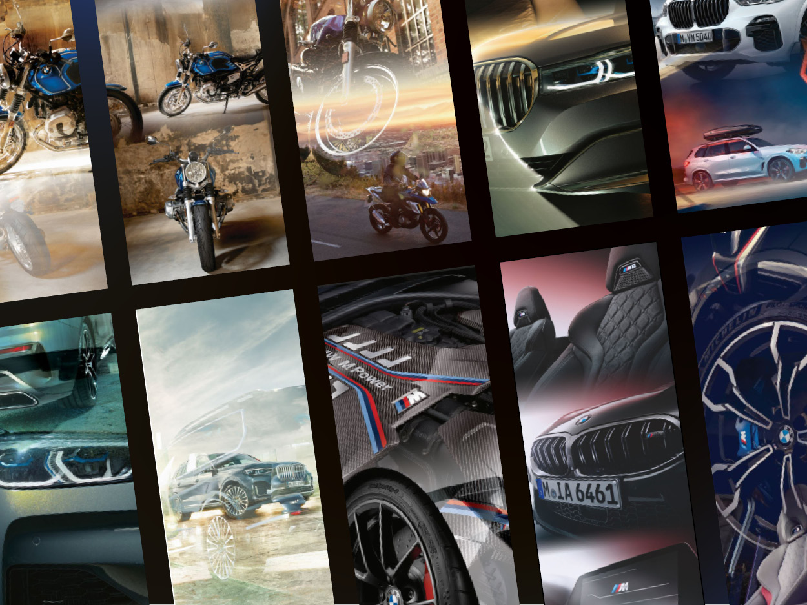
How we worked
An embedded partner inside the marketing operation.
The relationship is built to run at the pace of the business. Pivitt sits inside the marketing operation as the team that turns a single idea into every format it needs to live in, from a hero film and a social grid to print, environment and email. One campaign becomes hundreds of finished assets, each on brief and on brand, produced fast enough to keep three brands active at once.
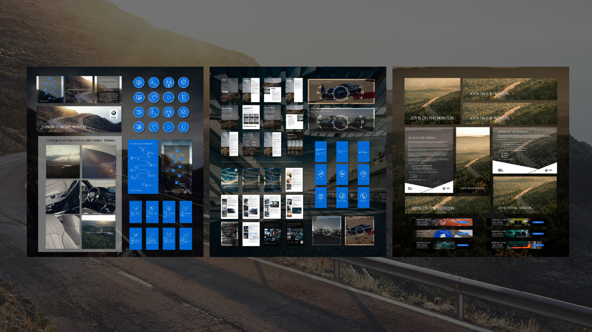
One idea, three brands
A single thought, carried in each brand’s own voice.
“Change is on the horizon” began as one strategic idea about a shifting market and a new way to buy. It ran across BMW and MINI, each treated in its own language, the same thought told two ways. BMW carried it with restraint and scale. MINI took it into a brighter, more playful register for a younger audience. BMW Motorrad held its own world inside the showroom, built around the riding culture its customers live in.
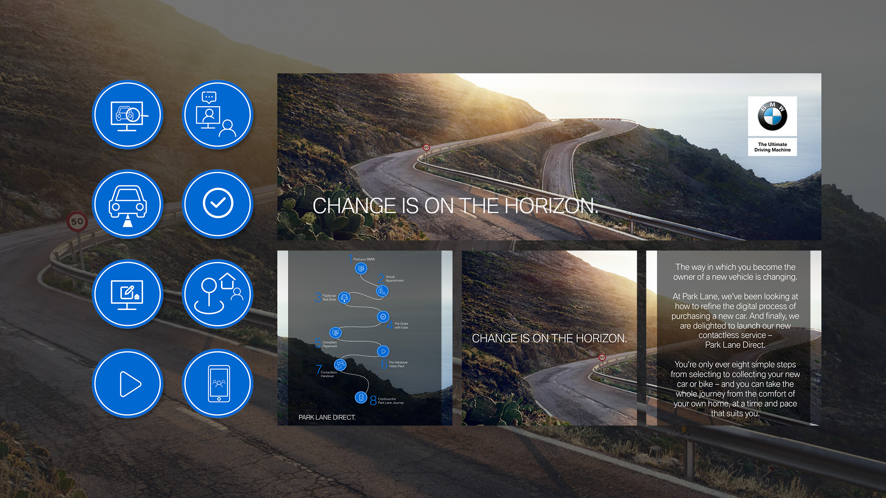

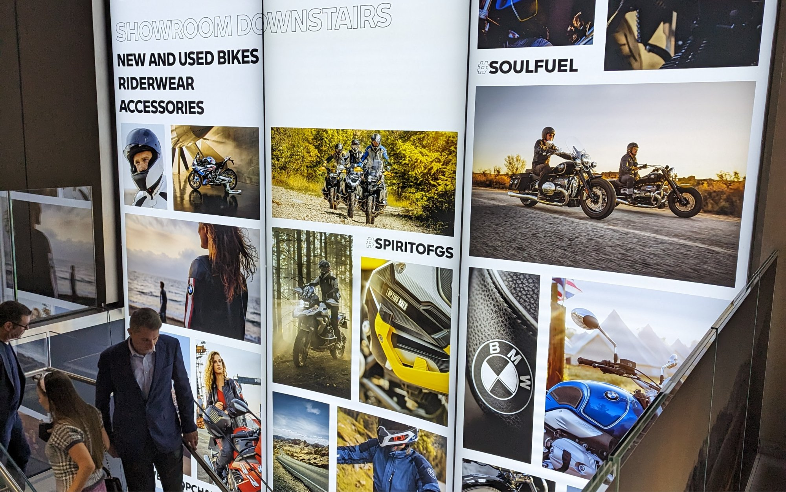
Launching a new service
Selling a car without a showroom visit.
When buying behaviour moved online, Park Lane Direct gave customers a way to choose and take delivery of a new car or bike from home. We built the launch around eight clear steps, from first enquiry to handover, and produced the full set of materials that explained it: the film, the step guide, the digital assets and the in-store support. A change in how the business sold, made simple enough to act on.
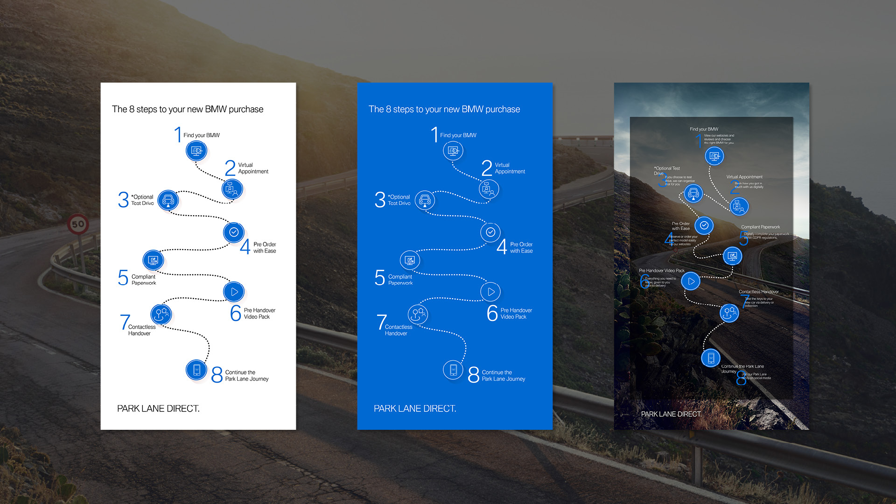
Communicating through disruption
Keeping a premium brand close when the doors were shut.
When the showrooms closed, the harder task was tone. The brand had to stay present and reassuring without losing its standing. We built a communications set around a calm, forward-looking message, carried through short film, a clear visual system, longform explainers and staff email signatures, so every contact with a customer said the same thing in the same voice.
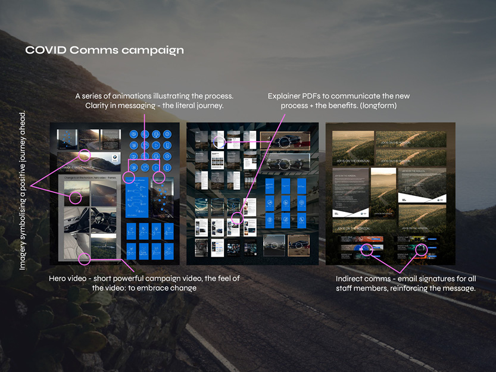
Product communications at scale
A growing range, kept clear and consistent.
As the line moved toward electric and hybrid, the product communications had to keep up. We built data-led range materials that present every model clearly, with specification, charging and pricing held in one consistent format across BMW and MINI. The system makes a complex, fast-moving range easy to read and quick to update.
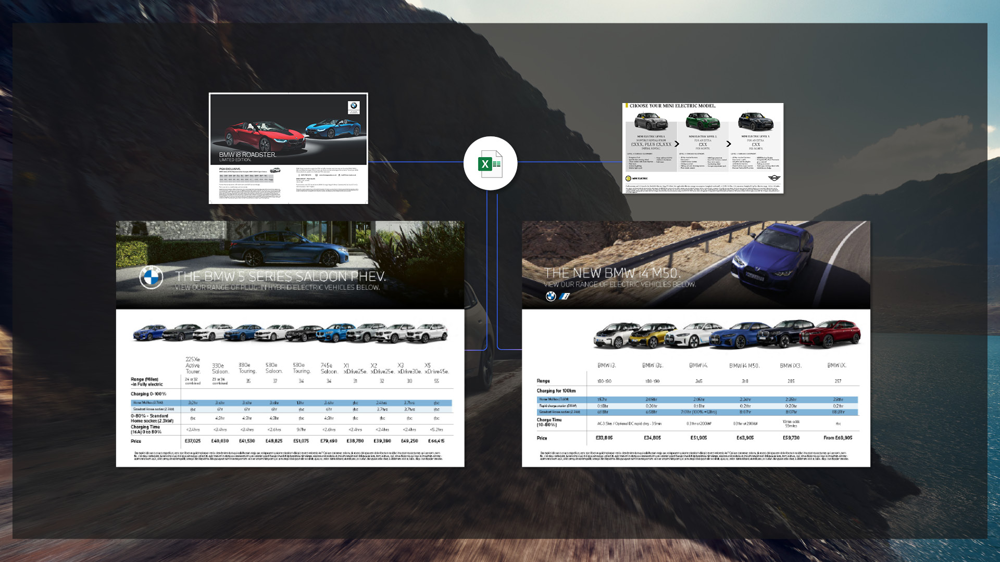
Environment and events
The brand, at full scale, in the room.
Inside the flagship the brand is physical. We produced the environmental graphics, event design and showroom moments that carry the three brands through the space, from launch evenings to the everyday wayfinding that tells a customer where they are and what to expect.
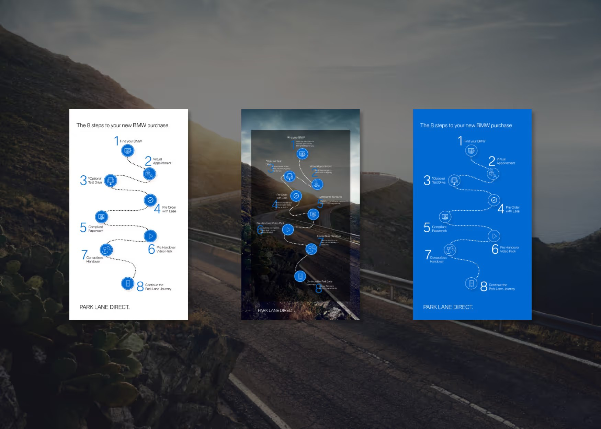

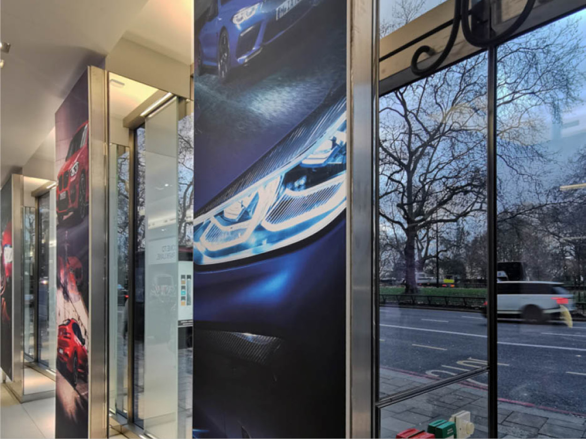
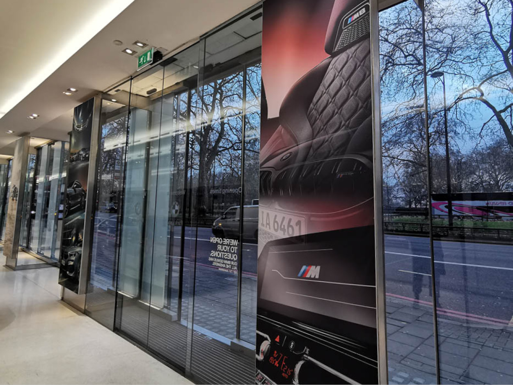
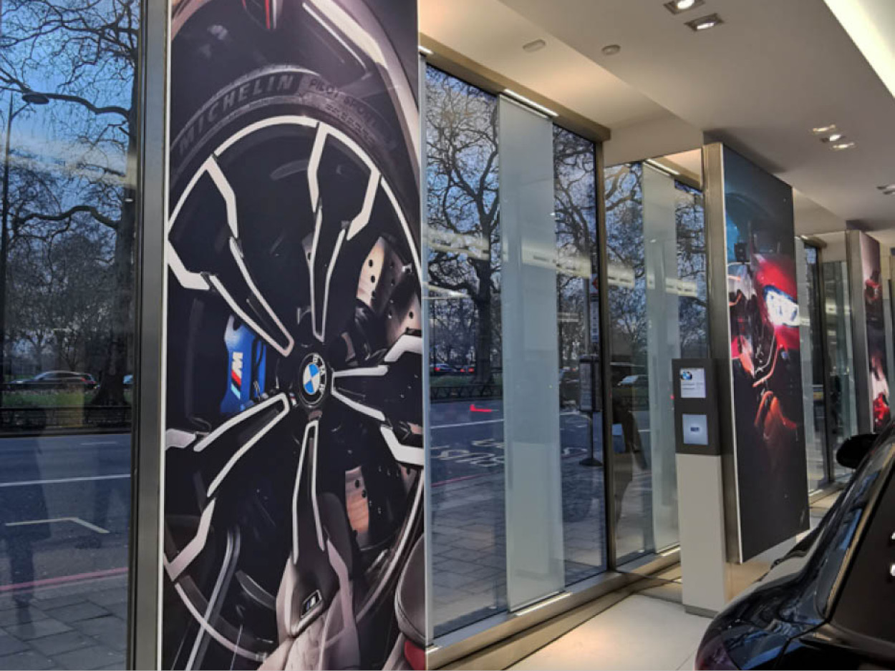
Every touchpoint
The standard holds down to the smallest detail.
A brand is judged at its smallest point of contact as much as its largest. The same care that goes into a launch film goes into a staff email signature, built across all three brands so that a message from anyone at Park Lane reads as the business itself. Consistency at that scale is what eight years of partnership actually buys.
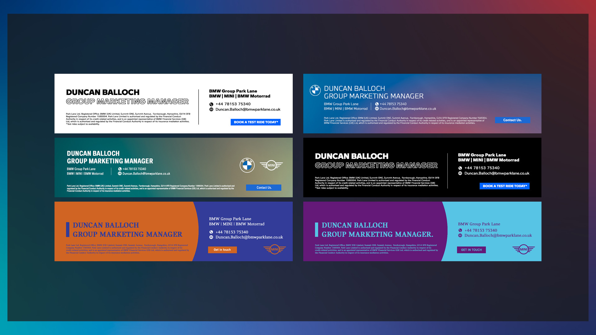
The outcome
Eight years, three brands, one consistent standard.
Over eight years the partnership has produced more than two hundred thousand assets and over a hundred and sixty campaigns, each one recognisably part of the same business. The work runs at the pace of a flagship, holds the manufacturer’s standard across three brands, and frees the marketing team to move quickly because the system behind them is already in place.
The team at Pivitt offer so much more than creative support and production. The ability to offer guidance and advice on bigger strategic objectives is exceptional.
Where does your brand sit against the business?
Every engagement starts with the Brand Alignment Diagnostic, a fixed first step that scores your brand against the business and shows what to fix first.